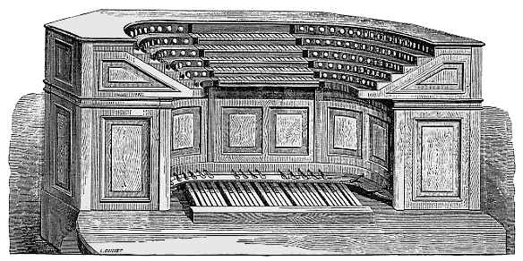

DISPOSITION DES CLAVIERS DE L'ORGUE MONUMENTAL
DE LA BASILIQUE DE SAINT-PIERRE DE ROME
PAR M. A. CAVAILLÉ-COLL, A PARIS

Projet d'orgue monumental pour la Basilique de Saint-Pierre de Rome
.
Présentation de l'ouvrage
.